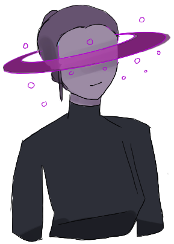
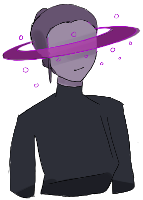

×
Hi there, I'm Carolyn. I'm the Wasteland Commander! Our stellar system is
flooded with space junk and carbon emissions and I'm here to manage it. Click around to see what
these emissions by species do to planets!


 
